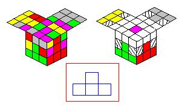
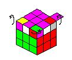

怎样玩魔方(转录)
魔方曾被誉为世界三大智力玩具之一，不过现在我不敢这么说了。什么？另外两个是什么？你可记住了：那是我们中国的九连环和捉放曹啊！
魔方可以拆开。废话！不过……你拆开过吗？如果没有，赶快把魔方一块一块地卸下来，嘿嘿嘿，是不是有一种打ＤＯＯＭ怪物的感觉？卸下来了吗？可以看到，除了骨架上的六个不同颜色的中心积木外，还有８个角上的积木和１２个棱上的积木。 中心积木只有一种颜色，棱上的积木有两种颜色，角上的积木有三种颜色。不管怎么说，没有两块积木是完全相同的。骨架上的中心积木是不能动的，所以中心积木与中心积木的相对位置是确定不变的，所以角上棱上的积木的正确位置也是不变的。例如一个红黄蓝色的角积木，它的正确位置就在红黄蓝中心积木对应面的角上。我们的任务就是把棱积木、角积木转到它们自己的位置上。
废话少说，快来观摩一下我的规划图吧:
| http://www.ahtvu.ah.cn/jxc1/zhykch/3002/wwww.files/c2.files/image001.jpg |
| 图1 |
从现在起我们就要开始玩魔方了，现在的任务是完成魔方的一面。
首先选择你要玩的面颜色，在这里我选择兰色进行教学，因为我喜欢兰色^_^,我们将该颜色的中心积木所在的面称为基面。
| http://www.ahtvu.ah.cn/jxc1/zhykch/3002/wwww.files/c2.files/image002.jpg |
http://www.ahtvu.ah.cn/jxc1/zhykch/3002/wwww.files/c2.files/image003.jpg |
http://www.ahtvu.ah.cn/jxc1/zhykch/3002/wwww.files/c2.files/image004.jpg |
| 图2 | 图3 | 图4 |
为了避免玩家转来转去找不到魔方的方向了，我们统一规定，魔方摆放如图2所示，另外在图3中我们要将外面的兰色块转入基面的黑色块位置时，却不能影响阴影积木，这也是玩魔方的难点。对于其他没着色的积木，都是些无关紧要的积木，可不去理会，把注意力集中在基面外面的操作块、操作块的目标位置和不可受到影响的积木上。(注：在操作的步骤中，阴影积木可以移动，但要保证步骤完毕后，阴影积木无变化)
对于魔方一面的完成，我们是一个一个操作块地完成的，饭也是一口一口地吃嘛！转时，一定要找准操作块的真正目标所在，要注意操作块的附加颜色，否则失败。如图4，黄蓝色块与绿蓝色块颠倒，所以兰色一面成功了也没有用。
下面是一些最基本的将操作块转入基面的功夫，可要认真揣摩呀！
| http://www.ahtvu.ah.cn/jxc1/zhykch/3002/wwww.files/c2.files/image005.jpg |
http://www.ahtvu.ah.cn/jxc1/zhykch/3002/wwww.files/c2.files/image006.jpg |
| 图5 | 图6 |
简要说明：图中阴影块是目标位置，注意哟，我可没有标记不可受影响的积木哟。另外，要注意操作块相对于目标位置的区别，不同的位置用不同的方法。如图6所示，基面外兰色标记的块，都可以通过转动使其到达Ａ位置或者Ｂ位置，然后再用１方法完成到达目的位置的任务。
| http://www.ahtvu.ah.cn/jxc1/zhykch/3002/wwww.files/c2.files/image007.jpg |
http://www.ahtvu.ah.cn/jxc1/zhykch/3002/wwww.files/c2.files/image008.jpg |
| 图7 |
图8 |
当目标块在背面时，可以通过图7这三步将目标块转到侧面来，然后转到A位置，用１方法完成到达目的位置的任务。触类旁通，如面图8所示，基面外兰色标记的块，都可以通过转动使其到达Ａ位置，然后再用２方法完成到达目的位置的任务。
| http://www.ahtvu.ah.cn/jxc1/zhykch/3002/wwww.files/c2.files/image009.jpg |
| 图9 |
当目标块接触基面时，可以通过图9这三步将目标块转到侧面来，然后转到A位置，用１方法完成到达目的位置的任务。
http://www.ahtvu.ah.cn/jxc1/zhykch/3002/wwww.files/c2.files/image010.jpg |
http://www.ahtvu.ah.cn/jxc1/zhykch/3002/wwww.files/c2.files/image011.jpg |
| 图10 |
图11 |
角积木的玩法讲完了，下面我们讲棱积木的玩法。(图10)
触类旁通：如图11所示，基面外兰色标记的块，都可以通过转动使其到达Ａ位置，然后再用４方法完成到达目的位置的任务。
| http://www.ahtvu.ah.cn/jxc1/zhykch/3002/wwww.files/c2.files/image012.jpg |
http://www.ahtvu.ah.cn/jxc1/zhykch/3002/wwww.files/c2.files/image013.jpg |
| 图12 |
图13 |
触类旁通：如图13所示，基面外兰色标记的块，都可以通过转动使其到达Ａ位置，然后再用５方法完成到达目的位置的任务。
http://www.ahtvu.ah.cn/jxc1/zhykch/3002/wwww.files/c2.files/image014.jpg |
http://www.ahtvu.ah.cn/jxc1/zhykch/3002/wwww.files/c2.files/image015.jpg |
| 图14 |
图15 |
触类旁通：如图15所示，基面外兰色标记的块，都可以通过转动使其到达Ａ位置，然后再用６方法完成到达目的位置的任务。
http://www.ahtvu.ah.cn/jxc1/zhykch/3002/wwww.files/c2.files/image016.jpg |
| 图16 |
当目标块接触基面时，可以通过这三步将目标块转到侧面来，然后转到A位置，用５方法完成到达目的位置的任务。
至此，魔方一面的技巧已经全部讲完。下面我们将给房子垒砖头啦！
|
 http://www.ahtvu.ah.cn/jxc1/zhykch/3002/wwww.files/c2.files/image017.jpg |
| 图17 |
如图17所示(灰色是白色色块)，我们已经完成了基面(兰色)的工作，现在我们不再管基面了，我们将基面放在最下面。我们要作的第一个工作是将四个侧面的中心积木转到相应的位置使每个侧面都有四个相同颜色的倒'T'形状，如图中红框中所示。然后我们要完成的任务是将这些倒'T'形状的两侧填上正确的棱积木,如图中右上阴影部分所示。
http://www.ahtvu.ah.cn/jxc1/zhykch/3002/wwww.files/c2.files/image019.jpg |
| 图18 |
我不用多说了吧？会明白吗？用这八步着法可以将棱积木转到阴影位置。转的时候一定要注意魔方的方向不要乱了哟！
http://www.ahtvu.ah.cn/jxc1/zhykch/3002/wwww.files/c2.files/image020.jpg |
http://www.ahtvu.ah.cn/jxc1/zhykch/3002/wwww.files/c2.files/image021.jpg |
http://www.ahtvu.ah.cn/jxc1/zhykch/3002/wwww.files/c2.files/image022.jpg |
| 图19 | 图20 | 图21 |
触类旁通：如图19所示，打圈标记的棱积木，如果是红绿色的积木的话就可以通过转动使其到达Ａ位置，然后再用１方法完成到达目的位置的任务。
特殊情况：如图20左所示，红绿色棱积木已经在正确位置上了，可是却颠倒了颜色，这可如何是好？:( 方法肯定是有的，如图20右，将一个无关大局的棱积木(图中打了圈)转入该位置，红绿色积木自然就跑了出来了，不是吗？:)
好了，我们为魔方大厦垒起了砖头(图21)，看样子也完成了三分之二了，只剩下上层建筑了，这上层建筑里的九个积木全部是带有顶面色(粉红色)的积木,啊,别小瞧了这区区九个-----后面的路还长着呢！
现在，让我们到教堂里去，虔诚地在胸口划十字并祈祷：让我快点学会玩魔方吧！
今天我们要完成的任务是在魔方的顶面上画一个十字，如图23所示。
现在我要仔细讲解一下啦，大家可要听好啦！
http://www.ahtvu.ah.cn/jxc1/zhykch/3002/wwww.files/c2.files/image0182.jpg |
http://www.ahtvu.ah.cn/jxc1/zhykch/3002/wwww.files/c2.files/image018.jpg |
| 图22 | 图23 |
如上图22所示有一个方法1，共有六步，它到底做什么工作呢？
上图22下面有五个魔方，表示了十字的形成过程：当顶面只有一个粉红色块时，用方法1可以形成一个"一"字,在这个基础上再用方法1，形成一个"L",将顶面转向180度，然后用方法1,就形成了十字。
方法1这个过程完毕时，不会影响到已经完成的底层和中层,很有趣吧？以后的方法会越来越苛刻，影响的积木会越来越少，也会越来越复杂。
好了，十字架做好了(图23)，以后我们就更有信心完成魔方大厦了！
喂！上课啦！还在打瞌睡！
今天我们要完成的任务是让上层建筑的四个角积木“各就各位”，让它们到自己的正确位置上。
| http://www.ahtvu.ah.cn/jxc1/zhykch/3002/wwww.files/c2.files/image023.jpg |
| 图24 |
首先如上图24所示，我们将顶面上的四个角积木分别称为上角积木、下角积木、左角积木和右角积木。然后我们来看下图25(灰色代替了白色), 用下面的这两种方法可以实现的是：上角积木的位置保持不变，左角积木、右角积木和下角积木进行顺时针(或者逆时针)的位置交换，并且保持底层和中层的积木不发生变化，顶面保持十字。
http://www.ahtvu.ah.cn/jxc1/zhykch/3002/wwww.files/c2.files/image024.jpg |
| 图25 |
我说的还清楚吧？★そ∏⒋〔◇■＆→
当然，并不是什么事情都一帆风顺，下图26是对角交换的两种情况，可以用下面的"死"方法完成。当你们"熟"了的时候，自然会生出"巧"来，你们会发现这个问题很简单。
http://www.ahtvu.ah.cn/jxc1/zhykch/3002/wwww.files/c2.files/image025.jpg |
 http://www.ahtvu.ah.cn/jxc1/zhykch/3002/wwww.files/c2.files/image026.jpg |
| 图26 | 图27 |
好了，我们已经将上层建筑的四个"屋檐"转到了它们应该在的位置，现在我们要做的是将"屋檐"的顶面色块全部翻转过来,如图27所示。
通过下面图28这两种方法可以保持上角积木不变，并旋转左、右、下角积木，从而达到将顶面色完成的目的。
http://www.ahtvu.ah.cn/jxc1/zhykch/3002/wwww.files/c2.files/image027.jpg |
| 图28 |
呵呵，可是天下没有这么"撇脱"(便宜)的事,下面图29有几种特殊情况需要特殊处理：
| http://www.ahtvu.ah.cn/jxc1/zhykch/3002/wwww.files/c2.files/image028.jpg |
| 图29 |
看了上图29这5个张牙舞爪的"积木螃蟹"，是不是有些心烦呀？你们不应该去背这个过程，你们应该记着：将顶面色块没有在顶面上的角积木转到上角积木这个位置，然后使用方法1或者方法2，事情就会有转机。(我实在描述不出来了，嘻嘻，只可意会不可言传，就看的悟性了：)
今天我来讲最后一课，5555555555，老师讲完课就要走了，你们都不伤心呀？
我们需要做的是将魔方上层建筑的四个棱积木移到正确的位置上。嗨！看我的“独孤六剑”气势磅礴、连绵不绝最后一击！(图30)
http://www.ahtvu.ah.cn/jxc1/zhykch/3002/wwww.files/c2.files/image029.jpg |
| 图30 |
(方法1是逆时针转动，方法2是顺时针转动)
呵呵，莫要晕倒，最后一招当然是相当厉害的，你们看象不象"拳皇"里"龙"(坂崎良)的绝杀"龙虎狂舞"？言归正传: "转四棱"的方法1 其实是 "平四方"的方法1 ＋ "平四方"的方法2, "转四棱"的方法2 其实是 "平四方"的方法2 ＋ "平四方"的方法1。当然还有下面图31这种情况，相信能够解决这个问题。
| http://www.ahtvu.ah.cn/jxc1/zhykch/3002/wwww.files/c2.files/image030.jpg |
| 图31 |
至此，魔方大厦已经全部竣工，好好地享受成功的喜悦吧！^_^